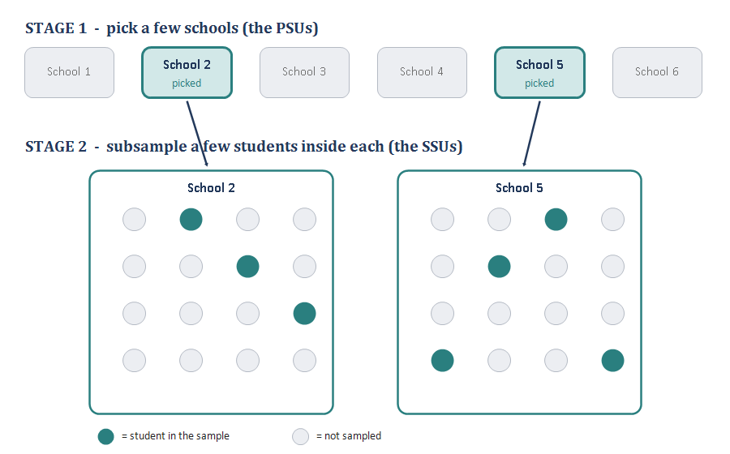
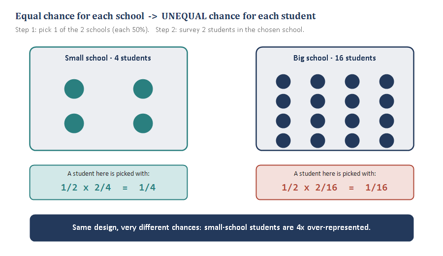
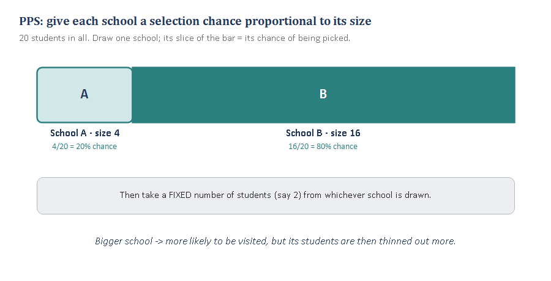
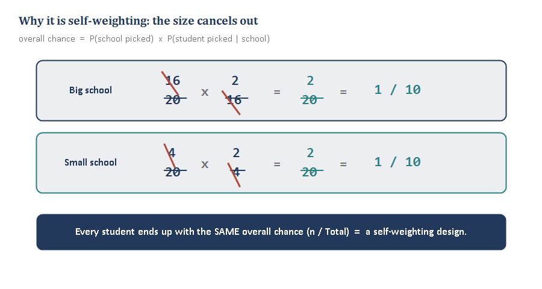

Module 5 — Multistage & PPS/PPeS
Sampling Refresher · Probability proportional to size • self-weighting designs • PSUs and SSUs
In cluster sampling you took whole groups and measured everyone in them. Multistage keeps the cost savings of clustering but samples within the chosen groups too — and PPS is the trick that keeps everyone’s chance of selection equal. This module builds those ideas one small piece at a time, the same way we walked through them together.
Piece 1 — What “multistage” means (PSUs and SSUs)
In cluster sampling (Module 4), once you picked a school you measured everyone in it. That’s fine when clusters are small, but real schools have hundreds of kids — you can’t survey all of them in every school you land on.
Multistage sampling fixes that by sampling in steps:
- Stage 1: from the full list of schools, randomly pick a few schools.
- Stage 2: inside each chosen school, don’t take everyone — randomly pick a handful of students.
That’s a two-stage design. You could keep going (schools, then classrooms, then students = three stages), which is where the “multi” comes from.
The vocabulary just names the units at each stage:
- PSU — Primary Sampling Unit = what you pick first. Here, the school.
- SSU — Secondary Sampling Unit = what you pick second, inside a PSU. Here, the student (or the classroom, if there’s a stage in between).

Cluster = pick groups, take everyone. Multistage = pick groups, then sample within them too.
The big practical payoff: you get the cost savings of clustering (your fieldworker only visits a few schools) without being forced to interview every single person in those schools.
Cluster vs. multistage at a glance
| Cluster sampling | Multistage sampling | |
|---|---|---|
| Inside a chosen group | measure everyone | subsample — take only some |
| Stages of selection | one (pick clusters) | two or more (PSUs, then SSUs, …) |
| Cost per group visited | higher (interview all) | lower (interview a few) |
| Watch out for | big design effect if roh is high | unequal selection chances (see Piece 2) |
One thing to keep straight: don’t mix up the cluster (the group, e.g., the school) with the element (the unit, e.g., the child). The mantra from Module 4 still holds — sample clusters, measure elements — and now we add: … but in multistage you sample the elements too.
Check yourself (Piece 1). Can you tell me, in your own words, the difference between what happens inside a chosen cluster under plain cluster sampling vs. under multistage?
A quick aside — PPS vs. PPeS (the “e”)
You asked what PPeS is, so let’s pin down the pair before we build up to it.
- PPS = Probability Proportional to Size. When you pick your PSUs (schools), you give bigger schools a proportionally bigger chance of being selected. A school with 800 kids is twice as likely to be picked as one with 400. (This is Piece 3 — the fix for the problem in Piece 2.)
- PPeS = Probability Proportional to estimated Size. Same idea, but with a catch: in the real world you often don’t know each school’s exact current enrollment when you draw the sample. So you use the best available estimate — last year’s census, an old administrative file — as your “measure of size.”
The only difference is the “e”:
| Measure of size used | When to use it | |
|---|---|---|
| PPS | the true, exact size | you actually have current counts |
| PPeS | an estimate / proxy of size | true size is unknown or outdated (the usual real-world case) |
The consequence: with PPS you can make the design perfectly self-weighting (every person has an identical overall chance). With PPeS, because your sizes are a little off, it comes out almost self-weighting, and weighting tidies up the rest (Module 6). We’ll see exactly why in Piece 4.
Piece 2 — Why equal chance for schools is unfair to students
Here’s the wrinkle multistage introduces. Keep it as simple as possible: 2 schools, we pick 1 of them (each 50%), then survey 2 students in whichever we picked. One school is small (4 students), the other big (16 students).
Work out a single student’s overall chance of being surveyed — multiply the two stages together:
- In the small school: P(school picked) × P(student picked | picked) = 1/2 × 2/4 = 1/4.
- In the big school: 1/2 × 2/16 = 1/16.

So a student in the small school is four times as likely to end up in the sample as a student in the big school — even though we did nothing “unfair” on purpose. Equal chance for the clusters produced very unequal chances for the elements.
| School | Students | P(school picked) | Take | P(student|picked) | Overall |
|---|---|---|---|---|---|
| Small | 4 | 1/2 | 2 | 2/4 | 1/4 |
| Big | 16 | 1/2 | 2 | 2/16 | 1/16 |
Why it matters: if small-school students are over-represented and small schools differ from big ones (rural vs. urban, say), your estimates are biased unless you fix it. Two ways to fix it: (a) weight afterward (Module 6), or (b) design it away up front by making a school’s selection chance depend on its size — that’s PPS.
The root cause: every school had the same chance, but schools hold different numbers of students. Equal chance for unequal-sized groups = unequal chance for individuals.
Check yourself (Piece 2). Suppose the big school had 40 students instead of 16 (still pick 1 of the 2 schools, still survey 2). What’s a student’s chance in the big school now — and how many times over-represented are the small-school students?
Piece 3 — PPS: probability proportional to size
The fix is elegant. Instead of giving every school the same chance, give each school a chance proportional to how many students it has. Big schools are more likely to be drawn; small schools less likely — in exact proportion to size.
Concretely: 20 students across the two schools. School A has 4 (that’s 4/20 = 20% of all students); School B has 16 (16/20 = 80%). Under PPS, School A is drawn 20% of the time and School B 80% of the time.

Then — and this is the second half of the trick — you take a fixed number of students (say 2) from whichever school is drawn. Notice the tug-of-war this sets up:
- A big school is much more likely to be visited (good chance for its students)… but once visited, its 2 sampled students are drawn from a big pool, so each individual is diluted.
- A small school is rarely visited… but if it is, its 2 students come from a tiny pool, so each is concentrated.
These two forces pull in opposite directions. In Piece 4 we’ll see they cancel exactly.
PPS trades an equal chance of picking the school for a fair chance of picking the person.
Check yourself (Piece 3). Under PPS, School B (size 16) is visited 80% of the time but we still survey only 2 of its students. Compared with the old equal-chance design (50%), is a Big-school student now more or less likely to be surveyed — and why?
Piece 4 — Self-weighting designs (and where PPeS lands)
Now put the two halves together and watch the magic. A student’s overall chance is still P(school picked) × P(student | picked). Under PPS:
- Big school: (16/20) × (2/16) = 2/20 = 1/10.
- Small school: (4/20) × (2/4) = 2/20 = 1/10.
The school’s size appears once on top (in the selection chance) and once on the bottom (in the within-school chance), so it cancels. Every student — big school or small — ends up with the same overall chance, 1/10.

A design where every element has the same overall probability of selection is called self-weighting. The name says it: because everyone’s chance is equal, no unequal weights are needed to correct the estimate — you can (roughly) just take a simple average.
The general rule: if you draw PSUs with probability proportional to size and then take a fixed number n of elements from each drawn PSU, every element’s chance = n / (total elements). Constant, by construction.
The same two schools, now under PPS
| School | Size | P(picked) — PPS | Take | P(student|picked) | Overall |
|---|---|---|---|---|---|
| Small | 4 | 4/20 | 2 | 2/4 | 1/10 |
| Big | 16 | 16/20 | 2 | 2/16 | 1/10 |
Every overall chance is the same (1/10) — the mark of a self-weighting design. Compare with Piece 2, where the same two schools gave 1/4 vs. 1/16.
Where PPeS comes in: all of this assumed we knew each school’s exact size. In practice we use estimated sizes (PPeS). If last year’s enrollment is a little off from today’s, the sizes don’t cancel perfectly, so the design is almost self-weighting. That small leftover imbalance is mopped up with weights in Module 6 — which is exactly why weighting is the next module.
Self-weighting = every element has the same overall chance of selection. PPS at stage 1 + a fixed take at stage 2 gets you there; PPeS gets you close.
Check yourself (Piece 4). In your own words, why does making a school’s selection chance proportional to its size make the whole design self-weighting? What exactly cancels?
Module 5 in one breath
- Multistage = sample groups, then subsample within them (PSUs, then SSUs).
- Equal chance for groups makes unequal chance for people, because groups differ in size.
- PPS fixes it by giving each group a selection chance proportional to its size.
- PPS + a fixed take per group = self-weighting: everyone shares one overall chance, n/Total.
- PPeS uses estimated sizes when true sizes are unknown: almost self-weighting, with weighting to finish (Module 6).